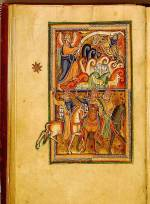

Psalterium. Latijn. Handschrift op perkament, 185 ff., 245 x 175 mm. Noord-Engeland, 1190-1200. -- (BPL 76 A)
Het psalterium was in de twaalfde eeuw wel het meest gebruikte gebedenboek. Naast de psalmen en de cantica van het Oude en Nieuwe Testament bevatte het ook een kalender. Zo leken al een boek bezaten, dan was het dit. Het elementaire karakter wordt in dit handschrift nog eens onderstreept door een befaamde inscriptie op folio 30v: ‘Cist Psaultiers fuit mon seigneur saint Looys qui fu Roys de France, ouquel il aprist en s’enfance’. De heilige Lodewijk (1214-1270) bezat dus niet alleen het boek: hij heeft er ook uit leren lezen.
Op het eerste gezicht lijkt het vreemd dat de toekomstige koning van Frankrijk in zijn jeugd een psalter van Engelse makelij bezat. Toch staan, behalve de stijl van de miniaturen, ook inscripties in de kalender borg voor een Engelse herkomst. Daar worden namen genoemd van de hoogste Engelse adel. Aangenomen wordt dat Filips II Augustus, vader van de heilige Lodewijk, het handschrift verworven heeft toen hij de Engelse baronnen in 1202 bij hun revolt tegen Jan zonder Land door een inval metterdaad steunde. Oorspronkelijk is het handschrift vermoedelijk gemaakt voor Geoffrey Plantagenet, aartsbisschop van York van 1191 tot 1212.
Het ‘Psalterium van de heilige Lodewijk’, zoals het handschrift gewoonlijk heet, heeft als enkele andere psalteria uit de twaalfde en dertiende eeuw voorin een reeks bladvullende miniaturen, die geen toelichting behoefden. Er staat dan ook geen verklaring bij. Zij geven de hoofdmomenten uit de heilsgeschiedenis. Het hier getoonde handschrift telt drieëntwintig bladen met miniaturen, die alle, om de beeldzijde te sparen, aan de achterkant blank gelaten werden. Het kostbare karakter van het handschrift wordt nog eens bevestigd door de zware gouden achtergrond van de miniaturen. Veertien scènes hebben betrekking op het Oude, tweeëndertig op het Nieuwe Testament. Het repertoire is sterk aan traditie gebonden. De miniaturen zijn een meesterwerk van de Engelse romaanse boekverluchting. De twee openliggende pagina’s, folia 16v-17r, laten twee dubbele voorstellingen zien; links: de verkondiging van Christus’ geboorte aan de herders, en de drie koningen wijzend naar de ster; rechts: de koningen voor Herodes, en hun aanbidding van Christus. Opmerkelijk is hoe in de voorstelling links onder de omlijsting door paard en ster wordt overschreden.
Literatuur
- L. Delisle, Notice de douze livres royaux du XIIIe et du XIVe siècle. Paris 1902, p. 19-26.
- A.W. Byvanck, Les principaux manuscrits à peintures conservés dans les collections publiques du Royaume des Pays-Bas, Paris 1931 ( = Bulletin de la Société francaise de reproduction des manuscrits à peintures. 15), p. 84-87, pl. XXVI.
- J.J.G. Alexander and C.M. Kauffmann, English illuminated manuscripts, 700-1500. Brussel 1973, nr. 38.
- Nigel Morgan, Early Gothic manuscripts, 1190-1250. I. London 1982 ( = A survey of manuscripts illuminated in the British Isles. 4), nr. 14.
- English Romanesque art, 1066-1200. London 1984, nr. 79.
- Facsimile van de miniaturen: Miniatures du Psautier de S. Louis [...] Avec une préface de H. Omont.] Leyde 1902 ( = Codices Graeci et Latini photographice depicti. Suppl. II).
| vorige pagina | top pagina |